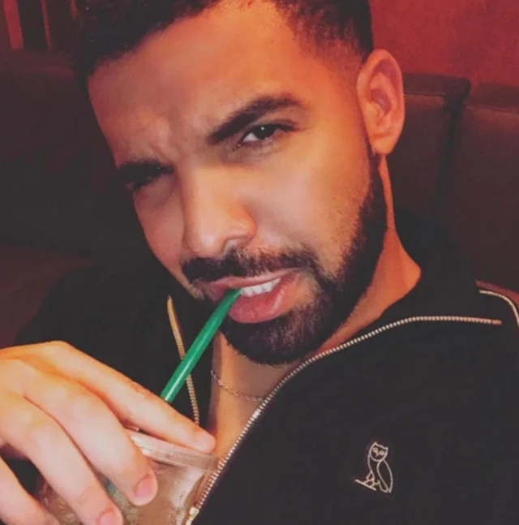

Drizzy Drake

Drake is a Canadian Rapper who was born in 1986. He is one of the most popular rappers and has special talent in R&B and Hip Hop. He first gained fame from being in a drama series and then became an influencial artist that he is today. Drake was only 15 years old when he became famous and took his stage name after his middle name "Drake". His full name is Aubrey Drake Graham